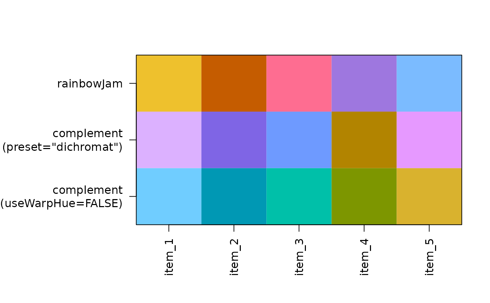

Create color complement by rotating the color hue
color_complement.RdCreate color complement by rotating the color hue
Arguments
- color
charactervector of R compatible colors.- Hflip
numericvalue in degrees (from 0 to 360) added to the color hue to produce the final color hue. Typically 180 degrees will select the color opposite the input color on a virtual color wheel. Note thatwarpHue=TRUEalso enables a customized color wheel.- Cfloor
numericvalue used to limit output chromaCvalues to this minimum value, to ensure a minimum color saturation.- Lrange
numericvector with the allowed range of output luminanceLvalues. When supplied, output values are simply forced to this range with no other scaling of intermediate values.- useWarpHue
logicalindicating whether to use the warp hue functionscolorjam::h2hw()andcolorjam::hw2h()which effectively change the color wheel from red-green-blue to red-yellow-blue.- ...
additional arguments are ignored.
Details
This function rotates the color hue to create a complementary
color for each color input. It differs from standard methods
by using warped color hue by default (useWarpHue=TRUE), which
uses a red-yellow-blue color wheel instead of R default
red-green-blue. It also imposes a minimum chroma, which
ensures the output color is reasonably high in color
saturation.
See also
Other jam utility functions:
get_numeric_transform()
Examples
n <- 5;
rc <- colorjam::rainbowJam(n);
rc_comp <- color_complement(rc);
rc_comp2 <- color_complement(rc, useWarpHue=FALSE);
jamba::showColors(list(rainbowJam=rc,
`complement\n(preset="dichromat")`=rc_comp,
`complement\n(useWarpHue=FALSE)`=rc_comp2));

rc <- colorjam::rainbowJam(n, preset="ryb");
rc_comp <- color_complement(rc, preset="ryb");
rc_comp2 <- color_complement(rc, useWarpHue=FALSE);
jamba::showColors(list(`rainbowJam\n(preset="ryb")`=rc,
`complement\n(preset="ryb")`=rc_comp,
`complement\n(useWarpHue=FALSE)`=rc_comp2));
## divergent color gradients through white
## hint: use higher lens value to make middle colors more intense
rc <- colorjam::rainbowJam(n);
rc_comp <- color_complement(rc);
rc_ramps <- lapply(jamba::nameVector(seq_along(rc)), function(i){
j <- jamba::getColorRamp(c(rc[i], "white", rc_comp[i]),
n=25,
lens=0,
divergent=TRUE);
names(j) <- "";
names(j)[1] <- "original colors";
names(j)[25] <- "color complements";
j;
});
jamba::showColors(rc_ramps, groupCellnotes=TRUE, groupByColors=FALSE);
## divergent color gradients through black
## hint: use higher lens value to make middle colors more intense
rc_ramps2 <- lapply(jamba::nameVector(seq_along(rc)), function(i){
j <- jamba::getColorRamp(c(rc[i], "black", rc_comp[i]),
n=25,
lens=1,
divergent=TRUE);
names(j) <- "";
names(j)[1] <- "original colors";
names(j)[25] <- "color complements";
j;
});
jamba::showColors(rc_ramps2, groupCellnotes=TRUE, groupByColors=FALSE);